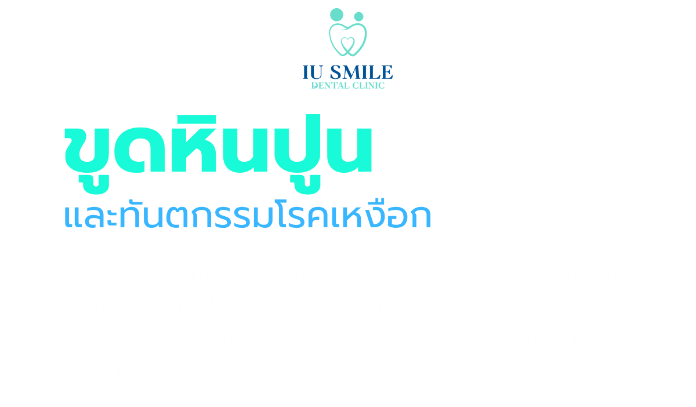
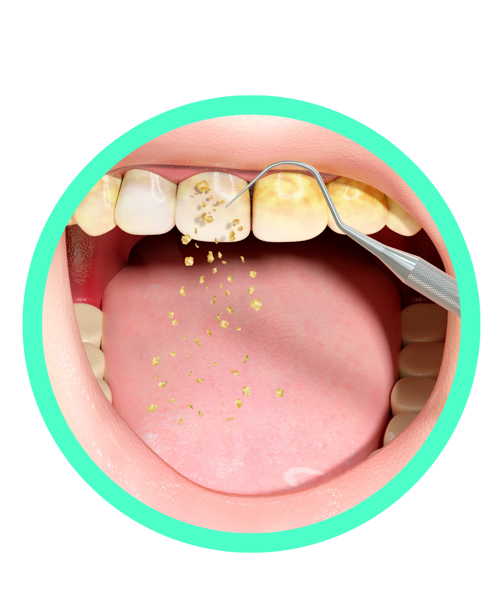
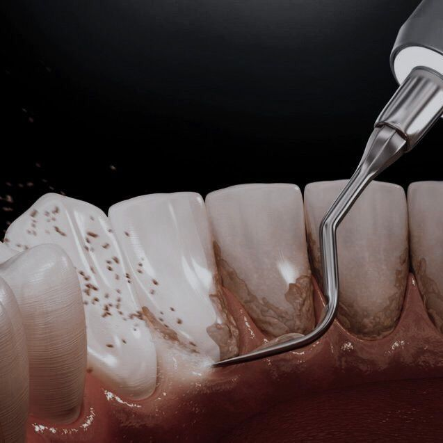
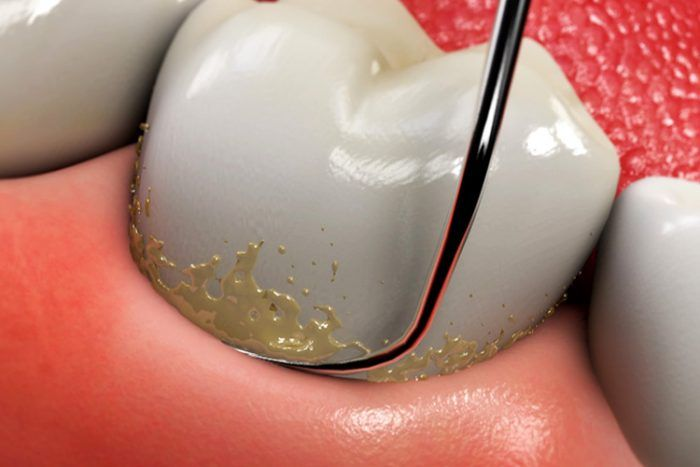
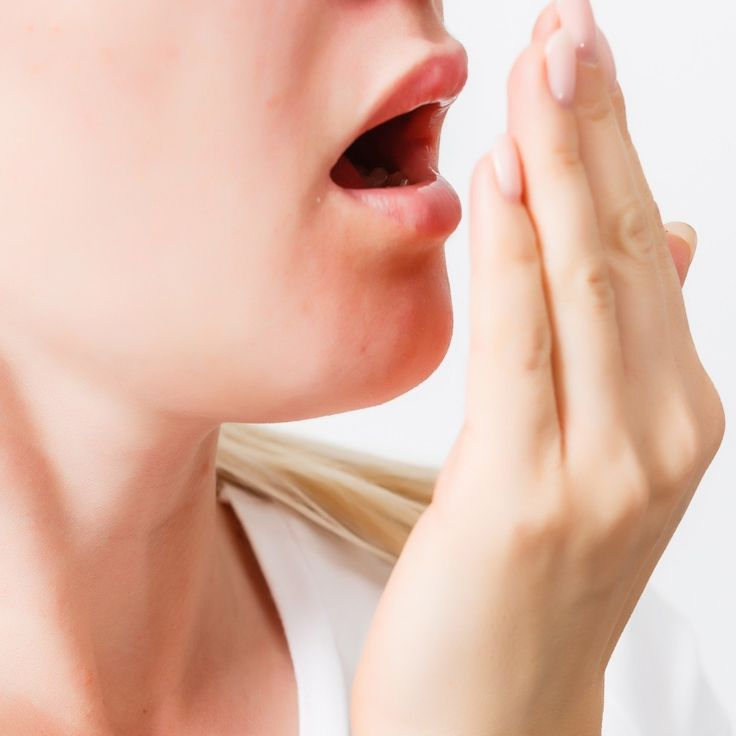
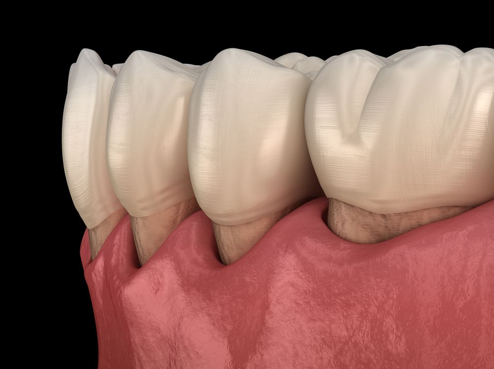
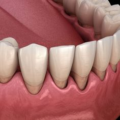
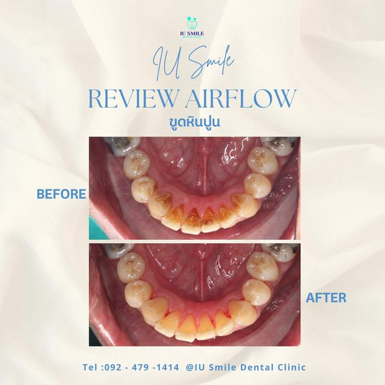
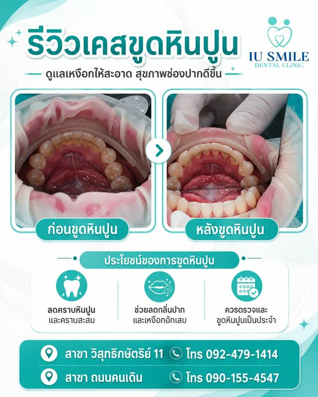

นัดหมายปรึกษา

การขูดหินปูน คือ การใช้เครื่องมือ(Ultra sonic)กำจัดคราบหินปูน คราบจุลินทรีย์
และคราบสีที่สะสมแน่นอยู่บริเวณ เหนือเหงือก และขอบเหงือก
ซึ่งการแปรงฟันปกติไม่สามารถทำความสะอาดออกได้ เพื่อตัดวงจรการสะสมของแบคทีเรีย
เหมาะกับใครเหมาะสำหรับผู้ที่มีหินปูนสะสมทั่วไป หรือมีภาวะ เหงือกอักเสบเบื้องต้น (เหงือกบวม เลือดออกตอนแปรงฟัน)
ระยะเวลาแนะนำให้ทำเป็นประจำทุก 6 เดือน เพื่อป้องกันการสะสม

การเกลารากฟัน คือ การรักษาโรคปริทันต์เชิงลึก โดยทันตแพทย์จะทำความสะอาดลึกถึงบริเวณ
ใต้เหงือกและผิวรากฟัน เพื่อกำจัดคราบหินปูน แบคทีเรีย และสารพิษที่ฝังแน่นอยู่
พร้อมปรับผิวรากฟันให้เรียบเนียน เพื่อให้เหงือกกลับมาแนบสนิทกับตัวฟันได้ดังเดิม
เหมาะกับใคร
เหมาะสำหรับผู้ที่เป็น โรคปริทันต์อักเสบ (Periodontitis) ขั้นกลางถึงรุนแรง ที่หินปูนลามลงไปใต้ร่องเหงือกและทำลายกระดูกเบ้าฟันแล้ว
ระยะเวลา
ทำตามคำแนะนำของทันตแพทย์เฉพาะทางโรคเหงือก

หินปูนที่สะสมอยู่เต็มไปด้วยแบคทีเรียและการหมักหมมของเศษอาหาร ทำให้เกิดก๊าซที่มีกลิ่นเหม็นรุนแรง นอกจากนี้หินปูนมักจะมีคราบสีเหลือง น้ำตาล หรือดำเกาะติดอยู่ ทำให้เวลายิ้มหรือพูดคุยจะมองเห็นได้ชัดเจน

หินปูนเกิดจากคราบจุลินทรีย์ (Plaque) ที่รวมตัวกับแร่ธาตุในน้ำลายแล้วจับตัวแข็งติดอยู่กับผิวฟัน พื้นผิวของหินปูนจะมีความขรุขระ
ทำให้เป็นแหล่งสะสมชั้นดีของแบคทีเรียจำนวนมหาศาล
ทำให้เกิด เหงือกอักเสบ (เหงือกบวมแดงง่าย มีเลือดออกขณะแปรงฟัน)
และหากปล่อยไว้นานจนลุกลามเป็น โรคปริทันต์อักเสบ
จะทำให้เหงือกร่นและกระดูกเบ้าฟันที่รองรับรากฟันถูกทำลายจนละลายตัวลง

เมื่อหินปูนสะสมหนาตัวขึ้นเรื่อยๆ จนลามลงไปใต้เหงือกและกัดเซาะกระดูกเบ้าฟันที่ยึดรากฟันไว้จนเสียหายหนัก ฐานรากที่เคยแข็งแรงจะเริ่มสูญเสียความมั่นคง ฟันจะเริ่มโยกคลอน เคี้ยวอาหารไม่ได้ และในท้ายที่สุดฟันซี่นั้นอาจหลุดร่วงไปเอง หรือทันตแพทย์ต้องพิจารณาถอนออกเพราะไม่สามารถรักษาไว้ได้
แปรงฟันวันละอย่างน้อย 2 ครั้ง (เช้าและก่อนนอน) ครั้งละ 2 นาที โดยวางขนแปรงเอียง 45 องศากับแนวเหงือก และปัดขนแปรงขึ้น-ลง (สำหรับฟันบนปัดลง ฟันล่างปัดขึ้น) เพื่อช่วยขจัดคราบจุลินทรีย์ที่ขอบเหงือก
การแปรงฟันทำความสะอาดได้เพียง 3 ส่วน (ผิวหน้า, ผิวด้านหลัง, ผิวบดเคี้ยว) แต่อีก 2 ส่วนคือซอกฟันต้องใช้ไหมขัดฟันช่วย เพื่อดึงเศษอาหารและคราบแบคทีเรียที่ซ่อนอยู่ระหว่างซี่ฟันออก ป้องกันไม่ให้เกิดหินปูนและฟันผุซอกฟัน
เลือกใช้ยาสีฟันที่มีส่วนผสมของฟลูออไรด์ และอาจเลือกสูตรที่ช่วยลดการสะสมของคราบแบคทีเรียหรือดูแลสุขภาพเหงือก (Gum Care) ร่วมกับการใช้น้ำยาบ้วนปากเพื่อช่วยลดเชื้อโรคในจุดที่แปรงเข้าไม่ถึง
หลีกเลี่ยงการใช้แปรงสีฟันขนแข็งเกินไปหรือแปรงฟันด้วยความรุนแรง เพราะอาจทำให้เหงือกร่นและผิวฟันสึกได้
แม้จะดูแลรักษาความสะอาดดีแค่ไหน แต่หินปูนก็ยังสามารถก่อตัวขึ้นได้ตามกาลเวลา การพบทันตแพทย์ทุก 6 เดือนจึงเป็นวิธีที่ดีที่สุดในการกำจัดหินปูนและเช็กสุขภาพเหงือกอย่างต่อเนื่องครับ


สิทธิบัตรทอง

สิทธิประกันสังคม